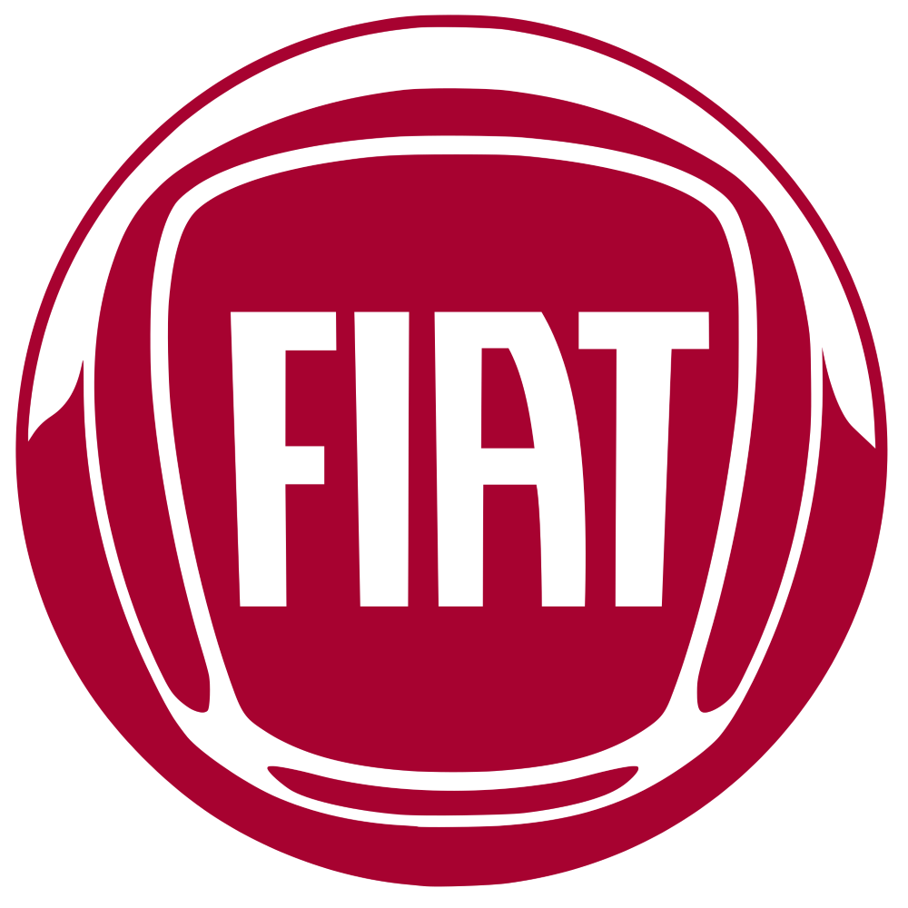

MARCAS
En este apartado te dejamos las marcas con las que trabajamos haga click en los logos para ver los modelos de cada marca:
AUDI |
|
 |
Audi es una empresa multinacional alemana fabricante de automóviles de gama alta de lujo y deportivos. Su sede central se encuentra en Ingolstadt, Baviera y forma parte desde 1965 del Grupo Volkswagen. |
BMW |
|
BMW es un fabricante alemán de automóviles y motocicletas de alta gama y lujo, cuya sede se encuentra en Múnich. Sus subsidiarias son Mini, Rolls-Royce, BMW i y BMW Bank. |
 |
CHEVROLET |
|
 |
Chevrolet es un fabricante estadounidense de automóviles y camiones con sede en Detroit, perteneciente al grupo General Motors. Nació de la alianza de Louis Chevrolet y William Crapo Durant el 3 de noviembre de 1911 |
DACIA |
|
Dacia es una marca de automóviles de Rumania, fundada en el año 1966 y perteneciente al grupo Renault desde 1999. Inicialmente, los modelos de Dacia eran modelos Renault bajo licencia, el Renault 8 y en particular el Renault 12, que se fabricó entre los años 1969 y 2006 como Dacia 1300 en diferentes evoluciones. |
 |
FIAT |
|
|  | Fiat Automobiles -siglas de Fabbrica Italiana Automobili Torino- es una histórica marca italiana de automóviles, bajo la que se comercializan vehículos desde 1899, origen del mayor grupo industrial italiano, Fiat S.p.A., propiedad de Stellantis. |
FORD |
|
Ford Motor Company, más conocida como Ford es de origen estadounidense Fundada por Henry Ford la compañía vende automóviles y vehículos comerciales bajo la marca Ford y la mayoría de autos de lujo bajo la marca Lincoln. Ford también posee el fabricante brasileño de SUV's Troller y el australiano FPV. En el pasado, también se han producido tractores y componentes de automoción. |
 |
HONDA |
|
 |
Honda Motor Co., Ltd., es una empresa de capital abierto de origen japonés fabricante de automóviles, motores para vehículos terrestres, acuáticos y aéreos, motocicletas, robots y componentes para la industria automotriz. |
JAGUAR |
|
Jaguar es la marca de vehículos de lujo de Jaguar Land Rover, una multinacional británica fabricante de automóviles con sede en Whitley, Coventry, Inglaterra. |
 |
MERCEDES |
|
 |
Mercedes-Benz AG es una empresa alemana fabricante de vehículos, subsidiaria de la compañía Mercedes-Benz Group. La marca es reconocida por sus automóviles de lujo, deportivos, autobuses, camiones, utilitarios y vehículos todoterreno. |
SEAT |
|
SEAT, S. A., es una empresa española de automóviles fundada por el desaparecido Instituto Nacional de Industria el 9 de mayo de 1950. |
 |